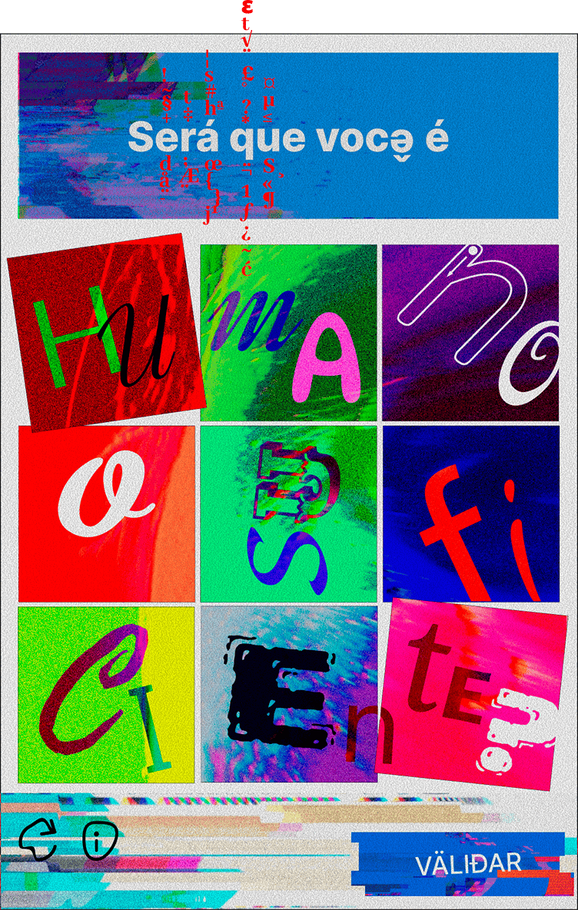

projeto em destaque · CRIA Senac 2026
PROVE QUE
VOCÊ NÃO É
UM ROBÔ.
Uma experiência interativa que usa a lógica dos captchas para questionar como identificamos humanidade, realidade e autenticidade em ambientes digitais.
A partir de imagens ambíguas e validações impossíveis, o projeto transforma um mecanismo cotidiano da internet em uma reflexão sobre inteligência artificial, representação e interpretação.
O trabalho investiga o limite entre aquilo que reconhecemos como humano e aquilo que os sistemas automatizados conseguem interpretar.
experimentar o captcha ↗